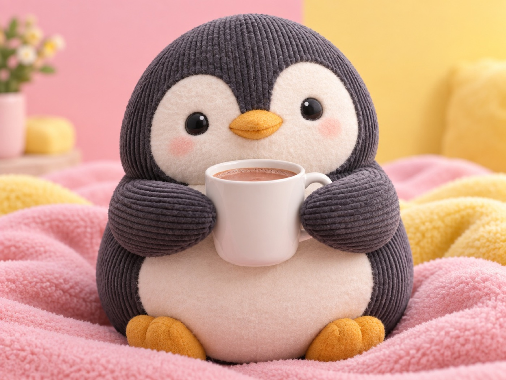

🧪 LAB · 試作 — AIが読書メモから一気に作った記事です。本番の一覧には出していません · 試作の一覧
🐧 EVERYDAY LIFE⚡ 22 SEC
Talk to yourself the way you talk to your best friend 🤝

Lost Confidence
They say one reason we lose confidence is not liking ourselves.
Best Friend Mode
Then I praise and cheer myself up, like I do for my best friend.
"Good job getting up early" is enough.
⚡ TRY IT
Inner critic or best friend?
⏰ Oops! I overslept.
☕ Oops! I spilled my coffee.
📱 Oops! I forgot to reply to a message.
🗯 "Late again? You never learn!"
🤝 "You were tired. Let's sleep early tonight."
🗯 "So clumsy! Why can't you be careful?"
🤝 "It's only coffee. Did you get burned?"
🗯 "So rude! Everyone will be angry."
🤝 "Just reply now. A little late is OK."
How do you talk to yourself? Choose a voice.
🐧 Size
💛 3 out of 3! You are your own best friend.
🙂 Nice! Next time, try the friend voice every time.
🌧️ Oh no, your penguin got tiny. Try the friend voice!
Down Days
On a down day, I say, "I'm only human, so some days I have no energy."
This is called "self-compassion."
Kind Both Ways
When you are kind to yourself, you can be kind to others too.
📚 I learned this from the Japanese blog "Panda no Ondo".